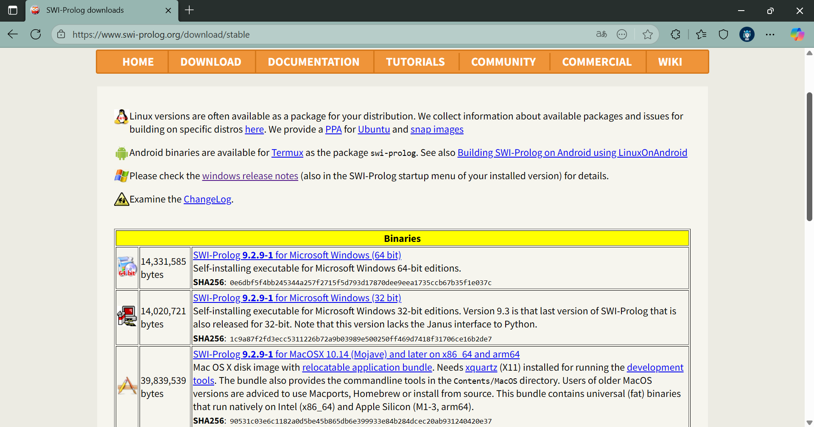
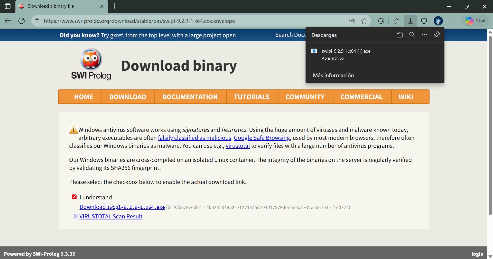
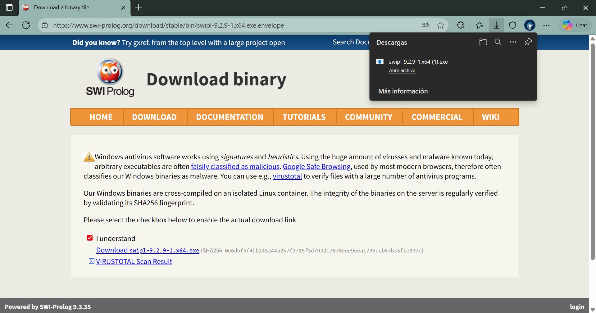

Practica4
Práctica 4: Prolog
Isidro Francisco Pérez Paz - 377806
Instalación del entorno de desarrollo
Entramos a la página de Prolog.
 Ve al apartado de Download.
Ve al apartado de Download.
 Te vas a la opción de Stable release.
Te vas a la opción de Stable release.
- Selecciona la versión que más se adapte a tu sistema operativo.
 Ya que selecciones tu sistema operativo, se te abrirá una pestaña.
- Marca la casilla I understand.
 Da clic en Download swipl-9…

Da clic en Download swipl-9…

Conceptos Básicos
El paradigma lógico se diferencia fundamentalmente de otros paradigmas (como el funcional) en su estructura. Mientras que la programación funcional se centra en procedimientos y retornos, la programación lógica se basa en una “Base de Conocimiento” y una “Máquina” que procesa “Preguntas” para generar “Respuestas”. En Prolog, los elementos fundamentales son:
- Hechos (Facts): Son afirmaciones incondicionales sobre objetos o relaciones.
- Sintaxis:
relación(objeto1, objeto2).Los nombres de propiedades y objetos deben comenzar con minúscula y terminar con un punto. - Ejemplos:
cat(tom).(Tom es un gato) oloves_to_eat(jorge, pasta)..
- Sintaxis:
- Reglas (Rules): Definen relaciones condicionales (si-entonces).
- Sintaxis:
cabeza :- cuerpo.Se lee “La cabeza es verdad si el cuerpo es verdad”. - Ejemplo:
happy(lili) :- dances(lili).(Lili es feliz si baila).
- Sintaxis:
- Consultas (Queries): Son preguntas que se hacen a la base de conocimientos para verificar la veracidad de una relación, como
¿Es Tom un gato?.
Programación Avanzada en Prolog
Recursión La recursión es vital en Prolog para recorrer estructuras o definir relaciones profundas, como la de “predecesor” (ancestro).
- Caso base: Un padre es un predecesor directo.
- Caso recursivo: Un predecesor es el padre de alguien que a su vez es predecesor del objetivo.
Objetos de Datos Prolog maneja varios tipos de objetos :
- Átomos y Constantes: Cadenas que empiezan con minúscula o entre comillas (
tom,'Hello World'). - Variables: Siempre comienzan con letra mayúscula (
X,Y,Resultado). - Números: Enteros y reales (
100,2000.45).
Operadores y Aritmética
Se utilizan operadores para comparaciones (>, <, =:= para igualdad numérica) y operaciones aritméticas estándar (+, -, *, /, mod) usando la palabra clave is para la asignación.
- Ejemplo:
X is 100 + 200..
Estructuras de Control y Listas
- Bucles: Se implementan mediante recursión y condiciones de parada, como contar hasta 10 o un rango
between(L, H, Y). - Listas: Se representan con corchetes
[a, b, c]. Se manipulan dividiéndolas en Cabeza (Head) y Cola (Tail) usando la sintaxis[Head | Tail]. - Operaciones de Listas:
- Membresía:
list_member(X, [X|_]).. - Concatenación: Unir dos listas.
- Eliminación y Permutación: Manipulación de elementos dentro de la estructura .
- Membresía:
Predicados Integrados (Built-in) El lenguaje incluye predicados útiles para verificar tipos de datos o realizar funciones matemáticas:
var(X): Verifica si X es una variable no instanciada.atom(X): Verifica si es un átomo.random(L,H,X): Genera un número aleatorio.
Aplicaciones con Prolog
- Backtracking: El mecanismo por el cual Prolog busca soluciones alternativas cuando falla una rama de ejecución.
- Estructuras de Datos Complejas: Implementación de árboles y listas enlazadas.
- Resolución de Problemas Lógicos:
- Torres de Hanoi: Algoritmo recursivo clásico.
- Circuitos Resistivos: Cálculo de valores en circuitos.
- El mono y el plátano: Un problema clásico de planificación y estados en inteligencia artificial.
Referencias
José Carlos Gallegos Mariscal, M. (2025-2). Unidad V El paradigma lógico. https://drive.google.com/file/d/1hgdy11WRojjvF_1wbcxWGkNH5QgwZiSO/view